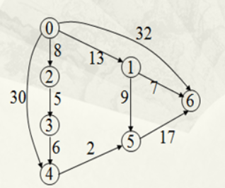
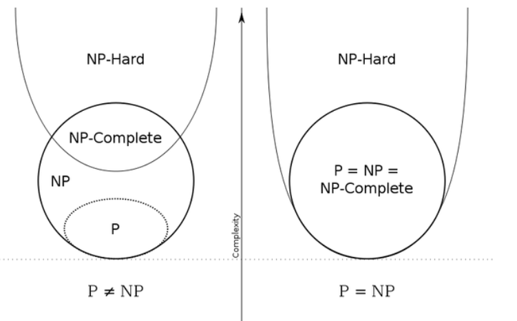
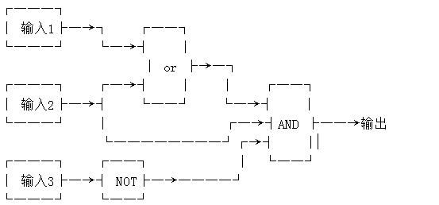
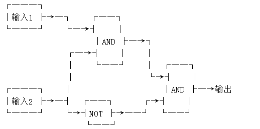

希望通过这篇文章可以不仅让计算机相关专业的人可以看懂和区分什么是P类问题什么是NP类问题，更希望达到的效果是非专业人士比如学文科的朋友也可以有一定程度的理解。
有一则程序员界的笑话，就是有一哥们去google面试的时候被问到一个问题是：在什么情况下P=NP，然后他的回答是”当N=1的时候”。这是我第一次听说P=NP问题，大概是在临近毕业为找工作而准备的时候。
这几天科技类新闻的头条都被阿尔法狗大战李世石刷爆了，虽然我也不是AI专家，但是也想从普通人的角度来写点东西来聊聊这个有意思的事情，在搜集资料的时候又一次看到了NP问题，于是想开个小差，在写下一篇文章《AI是怎么下围棋的?》之前，先说说这个NP问题哈。
最简单的定义是这样的：
P问题：
一个问题可以在多项式（O(n^k)）的时间复杂度内解决。
NP问题：
一个问题的解可以在多项式的时间内被验证。
NP-hard问题：
任意np问题都可以在多项式时间内归约为该问题，但该问题本身不一定是NP问题。归约的意思是为了解决问题A，先将问题A归约为另一个问题B，解决问题B同时也间接解决了问题A。
NPC问题：
既是NP问题，也是NP-hard问题。
这样的定义虽然简单，但是对于第一次接触P、NP的人来说，就像前一阵问你什么是“引力波”而你回答：引力波是时空的涟漪。从答案中几乎没有得到任何有意义的理解。所以接来来的内容希望不仅计算机相关专业的人可以看懂，希望达到的效果是文科生们也可以有一定程度的理解。
现阶段虽然电脑已经非常的普及，有人用它来上网，有用它来的游戏，有用它来看片，但是很少人有还在乎电脑的本质是计算机，它在给人们的日常生活带来娱乐和方便的同时表现的其实是其庞大的计算能力。日常生活中我们使用的各种五花八门的软件，其实都是一组计算机程序，而程序则可以看作是一系列算法，而我们看到的计算机的硬件的作用就是处理这些算法。这里的所说算法不只是简单的加减乘除，而是包括下面这些要素：
算术运算：加减乘除等运算
逻辑运算：或、且、非等运算
关系运算：大于、小于、等于、不等于等运算
数据传输：输入、输出、赋值等运算
以及通过控制结构来控制处理这些运算或操作的顺序。说到这里有点担心有些朋友已经不是很明白了，举个例子吧。
我们如何从n个数里面挑出最大的数。这个简单吧，就只需要一个一个数的对比过去就行了。具体说也就是先比较n和n-1，记下比较大的那个数，接着我们再比较记下的这个数和n-2，又记下比较大的数，这样一直比到最后一个数。这整个比较的过程我们就可以把其叫作算法，而这个算法就包含了上述的这些要素。给我们的n个数就是算法的输入数据，我们要挑选出最大的那个数就是算法的输出数据，当中我们判断大小的时候必然采用了一些基础的算术运算或关系运算。
希望说到这里大家能够基本理解什么是算法，因为接下来我要花一点时间说说什么是算法的时间复杂度。要计算或解决一个问题，该问题通常有一个大小规模，用n表示。我们还是引用上面的例子，从n个数里面找出最大的那个数，这个n就是该问题的规模大小。怎么找呢？我们要通过比较n-1次才能得到结果，这个n-1次就可以理解为所花的时间，也就是时间复杂度。再比如，将这n个数按从大至小排序，n是其规模大小，若是我们按照这样的方法：第一次从n个数里找最大，第二次从n-1个数里找最大，以此类推，需要的比较次数就是n(n-1)/2。我们所用的方法称之库为算法，那么n(n-1)/2就是该算法的时间复杂度。对于时间复杂度，当n足够大时，我们只注重最高次方的那一项，其他各项可以忽略，另外，其常数系数也不重要，所以，n(n-1)/2我们只重视n的平方这一项了，记为O(n^2)，这就是该算法对该问题的时间复杂度的专业表示。
时间复杂度其实并不是表示一个程序解决问题具体需要花多少时间，而是当问题规模扩大后，程序需要的时间长度增长得有多快。也就是说，对于高速处理数据的计算机来说，处理某一个特定数据的效率不能衡量一个程序的好坏，而应该看当这个数据的规模变大到数百倍后，程序运行时间是否还是一样，或者也跟着慢了数百倍，或者变慢了数万倍。不管数据有多大，程序处理花的时间始终是那么多的，我们就说这个程序很好，具有O(1)的时间复杂度，也称常数级复杂度；数据规模变得有多大，花的时间也跟着变得有多长，这个程序的时间复杂度就是O(n)，比如找n个数中的最大值；而像冒泡排序、插入排序等，数据扩大2倍，时间变慢4倍的，属于O(n^2)的复杂度。还有一些穷举类的算法，所需时间长度成几何阶数上涨，这就是O(a^n)的指数级复杂度，甚至O(n!)的阶乘级复杂度。不会存在O(2n^2)的复杂度，因为前面的那个“2”是系数，根本不会影响到整个程序的时间增长。同样地，O(n^3+n^2)的复杂度也就是O(n^3)的复杂度。因此，我们会说，一个O(0.01n^3)的程序的效率比O(100*n^2)的效率低，尽管在n很小的时候，前者优于后者，但后者时间随数据规模增长得慢，最终O(n^3)的复杂度将远远超过O(n^2)。我们也说，O(n^100)的复杂度小于O(1.01^n)的复杂度。
Ok，写到这里总算要引入正题了，容易看的出，前面的几类时间复杂度可以分为两种级别：一种是O(1),O(log(n)),O(n^a)等，我们把它叫做多项式级的复杂度，因为它的规模n出现在底数的位置；另一种是O(a^n)和O(n!)型复杂度，它是非多项式级的，其复杂度往往计算机都不能承受。
是时候引入P、NP问题的概念了：如果一个问题可以找到一个能在多项式的时间复杂度里解决它的算法，那么这个问题就属于P问题。而NP问题的理解并不是NotP，NP问题不是非P类问题。NP问题是指可以在多项式的时间里验证一个解的问题，NP问题的另一个定义是，可以在多项式的时间里猜出一个解的问题。P类问题相信不用举太多的例子来说明了，上面提到的找最大数，排序等问题都是P类问题，而要更好的理解NP问题需要另外举一个例子。
大整数因式分解问题-比如有人告诉你数9938550可以分解成两个数的乘积，你不知道到底对不对，但是如果告诉你这两个数是1123和8850，那么很容易就可以用最简单的计算器进行验证。
最短路径问题-某顶点出发，沿图的边到达另一顶点所经过的路径中，各边上权值之和最小的一条路径——最短路径。

如上图，比如告诉你从点0到点5的最短路径是22，要验证的话只需要0->1,加上1->5，13+9=22，时间复杂度是常量O(n)，假如从上图的六个点扩大到n个点的话，验证过程所需要的算法时间很杂度也都是O(n)。如果没有告诉你最短路径是多要，要用算法来求解的话，我们可以这样来“猜测”它的解：先求一个总路程不超过 100的方案，假设我们可以依靠极好的运气“猜出”一个路线，使得总长度确实不超过100，那么我们只需要每次猜一条路一共猜n次。接下来我们再找总长度不超过 50 的方案，找不到就将阈值提高到75…… 假设最后找到了总长度为 90 的方案，而找不到总长度小于90的方案。我们最终便在多项式时间O(n^k)内“猜”到了这个旅行商问题的解是一个长度为 90 的路线。
是否有不是NP问题的问题呢？有。就是对于那些验证解都无法在多项式时间复杂度内完成的问题。比如问：一个图中是否不存在Hamilton回路？
从图中的任意一点出发，最终回到起点，路途中经过图中每一个结点当且仅当一次，则成为哈密顿回路。
验证Hamilton回路只需要把给定的路径走一次看是不是只每个结点只经过一次，而验证不存在Hamilton回路则需要把每条路径都走一遍否则不敢说不存在Hamilton回路。
之所以要特别的定义NP问题，就在于我们不会去为那些无法在多项式时间复杂度内验证的问题去在多项式的时间复杂度内求它的解，有点拗口，但是多看几遍应该明白，通俗的讲就是对于一个问题告诉你答案让你去验证都需要很长很长时间，可以相像要用算法去求解的话必定需要更长时间。
那么反过来说，所有的P类问题都是NP问题。也就是说，能多项式地解决一个问题，必然能多项式地验证一个问题的解——既然正解都出来了，验证任意给定的解也只需要比较一下就可以了，大不了再算一次给你看也只需要多项式的时间复杂度。关键是，人们想知道，是否所有的NP问题都是P类问题，也就是说是否所有可以用多项式时间验证的问题，也可以在多项式时间内求解。我们可以用集合的观点来说明。如果把所有P类问题归为一个集合P中，把所有NP问题划进另一个集合NP中，那么，显然有P属于NP。现在，所有对NP问题的研究都集中在一个问题上，即究竟是否有P=NP？通常所谓的“NP问题”，其实就一句话：证明或推翻P=NP。
说到这里什么是P类问题什么是NP类问题就讲完了。可能有一些人还不是很清楚，再用通俗但不是很严谨的表述来总结一下。
P类问题就是指那些计算机比较容易算出答案的问题。
NP类问题就是指那些已知答案以后计算机可以比较容易地验证答案的问题。
接下来要进入的话题是为什么P=NP难证明，觉得枯燥的看到这里已经很好了，起码能分清楚P和NP问题了吧，接下来的内容将比较烧脑。

我们先来看一副集合示意图，这副图反映的是P=NP或P!=NP时候的两个集合的效果，其中就出现了NP-Hard和NPC两个新的概念。要说明为什么目前为止P是否等于NP还没有结论，不得不先弄清楚NPC和NP-Hard。
在引入NPC之前我们先来学习一个概念-归约。简单地说，一个问题A可以归约为问题B的意思是说，可以用问题B的解法解决问题A，或者说，问题A可以“变成”问题B。举个例子，现在有两个问题：求解一个一元一次方程和求解一个一元二次方程。那么我们说，前者可以归约为后者，因为知道怎么样解一个一元二次方程那么一定能解出一元一次方程，因为一元一次方程是一个二次项系数为零的一元二次方程。“问题A可归约为问题B”，那么很容易理解问题B比问题A难，要解决问题B的时间复杂度也就应该大于或等于解决问题A的时间复杂度。而且归约有一项重要的性质：传递性。如果问题A可归约为问题B，问题B可归约为问题C，则问题A一定可归约为问题C，这应该很容易理解吧。现在再来说一下归约的标准概念：如果能找到这样一个变化法则，对任意一个程序A的输入，都能按这个法则变换成程序B的输入，使两程序的输出相同，那么我们说，问题A可归约为问题B。
从归约的定义中我们看到，一个问题归约为另一个问题，时间复杂度增加了，问题的应用范围也增大了。通过对某些问题的不断归约，我们能够不断寻找复杂度更高，但应用范围更广的算法来代替复杂度虽然低，但只能用于很小的一类问题的算法。那么如果把一个NP问题不断地归约上去，那么最后是否有可能找到一个时间复杂度最高，并且能“通吃”所有的NP问题的这样一个超级NP问题？答案居然是肯定的。也就是说，存在这样一个NP问题，所有的NP问题都可以归约成它，并且这种问题不只一个，它有很多个，它是一类问题。这一类问题就是传说中的NPC问题，也就是NP-完全问题。所以NPC问题的定义非常简单。同时满足下面两个条件的问题就是NPC问题。首先，它得是一个NP问题；然后，所有的NP问题都可以归约到它。
既然所有的NP问题都能归约成NPC问题，那么只要任意一个NPC问题找到了一个多项式的算法，那么所有的NP问题都能用这个算法解决了，那么NP也就等于P了。因此，目前NPC问题还没有多项式的有效算法，只能用指数级甚至阶乘级复杂度的算法来解决，那么意思就是如果能够找到一个能用多项式时间复杂度解决的NPC问题就证明了P=NP了。
而说到NP-Hard问题。NP-Hard问题是这样一种问题，它满足NPC问题定义的第二条但不一定要满足第一条，就是说所有的NP问题都能归化到它，但它本身并不一定是个NP问题，也就是即使有一天发现了NPC问题的多项式算法，但NP-Hard问题仍然无法用多项式算法解决，因为它不是NP问题，对
于答案的验证都很困难。
下面引用Matrix67文章里的逻辑电路的例子来说明NPC问题。
逻辑电路问题是指的这样一个问题：给定一个逻辑电路，问是否存在一种输入使输出为True。
什么叫做逻辑电路呢？一个逻辑电路由若干个输入，一个输出，若干“逻辑门”和密密麻麻的线组成。看下面一例，不需要解释你马上就明白了。

这是个较简单的逻辑电路，当输入1、输入2、输入3分别为True、True、False或False、True、False时，输出为True。
有输出无论如何都不可能为True的逻辑电路吗？有。下面就是一个简单的例子。

上面这个逻辑电路中，无论输入是什么，输出都是False。我们就说，这个逻辑电路不存在使输出为True的一组输入。
回到上文，给定一个逻辑电路，问是否存在一种输入使输出为True，这即逻辑电路问题。
逻辑电路问题属于NPC问题。这是有严格证明的。它显然属于NP问题，并且可以直接证明所有的NP问题都可以归约到它。证明过程相当复杂，其大概意思是说任意一个NP问题的输入和输出都可以转换成逻辑电路的输入和输出（想想计算机内部也不过是一些0和1的运算），因此对于一个NP问题来说，问题转化为了求出满足结果为True的一个输入（即一个可行解）。
类似这样的NPC问题，目前还没有找到在多项式复杂度内可以求解的算法，所以说一旦这样的问题都变得多项式复杂度内可解的话，很多问题都可以通过现有的计算机技术进行求解。就比如电脑下围棋，验证一局棋的结果显然是很简单的，但要保证每局都能赢的话目前的方法需要电脑穷举出所有的可能性，并根据每一步棋的变化搜索出最终达到胜利的下棋路径，目前的计算机性能显然是达不到的。因为围棋的状态空间复杂度达到了10的172方，而围棋的博弈树复杂度达到了10的300次方，光看数字可能不直观，一句话就是围棋的变化多过宇宙的原子数量！
所以对于围棋这样的游戏人工智能如果要战胜人类需要实现下面两个条件中的任何一个：
计算机性能无限强大，可以穷举所有可能性；
研究出新的算法，在不穷举的情况下也能保证赢；
目前 Google 的 AlphaGo所做的只不过是通过优化算法提高穷举效率，同时利用现有的大数据与云计算来提升计算性能而已 。下面一篇文章将更详细的介绍AI是如何下围棋的，敬请期待。